Gabriel Carbinatto · Arthur Martins
Descoberta dos IDs de competição, coleta de metadados e download dos PDFs da CBF.
Extração com pdfplumber, regex para cartões e motivos de acréscimos, normalização textual.
EDA, grid search, duas passagens de BERTopic, fine-tuning, rotulagem e análise de VAR.
Classificação zero-shot via Ollama e comparação contra o método final por coesão semântica.
A súmula registra a justificativa do cartão em linguagem natural. A mesma infração pode aparecer com redações diferentes, graus de detalhe diferentes e termos próprios de cada árbitro.
Os três exemplos ao lado apontam para o mesmo comportamento: Protesto contra a arbitragem. A solução precisa capturar significado, não apenas palavras isoladas.
Classificar automaticamente os motivos de cartão e usar esses rótulos para analisar padrões disciplinares por temporada, time e árbitro.
Nos motivos de atraso e acréscimos, detectar menções ao VAR para acompanhar sua presença nas súmulas ao longo do tempo.
Série A parte de IDs conhecidos. Série B e Copa do Brasil são descobertas por busca no site da CBF.
Para cada competição e ano, o notebook percorre rodadas ou fases eliminatórias e lista os jogos disponíveis.
Data, rodada, equipes, identificador do jogo e links dos documentos são normalizados em uma tabela de controle.
Somente documentos de súmula são baixados, com retry, cache local e caminho persistido para auditoria posterior.
pdfplumber concatena todas as páginas da súmula em uma string por partida.
Matching normalizado resolve variações de escrita entre o índice e o PDF.
Regex extrai minuto, tipo, equipe e justificativa de cada cartão amarelo e vermelho.
Seção de atrasos e acréscimos extraída como campo textual livre por partida.
Texto processual da expulsão é limpo. O evento entra como amarelo para análise disciplinar.
Termos como VAR e checagem identificam menções ao protocolo de vídeo nos acréscimos.
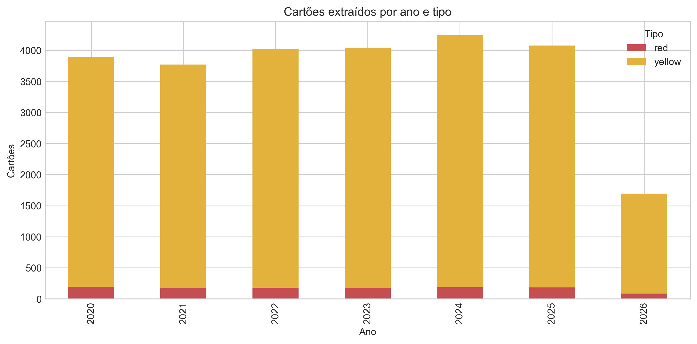
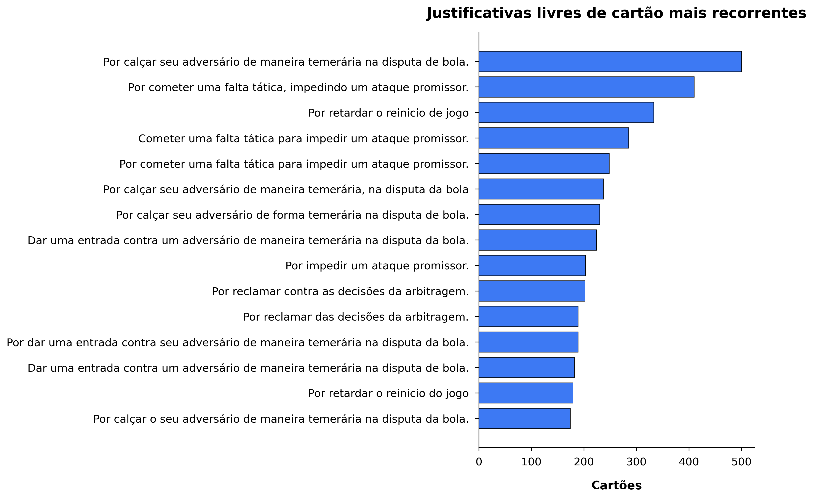
Cada grupo corresponde a uma categoria disciplinar das Leis do Jogo da FIFA. As mesmas categorias para as quais árbitros brasileiros são treinados a lavrar a súmula.
A LLM recebe apenas o texto da justificativa e os nomes dos 18 grupos. Sem exemplos, sem regras manuais, sem fine-tuning. Temperatura 0 para resposta determinística.
llama3.2:3b via Ollama localVocê é especialista em regras do futebol.
Classifique a justificativa de cartão abaixo em EXATAMENTE UM dos grupos listados. Responda apenas com o nome exato do grupo, sem explicações.
Grupos:
Ação temerária
Protesto contra a arbitragem
Falta tática em ataque promissor
... 15 grupos restantes ...
Justificativa: Por calçar seu adversário de maneira temerária na disputa de bola.
Grupo: Ação temerária
Gerar vetores para as justificativas únicas com o modelo E5 multilingual.
n_neighbors e min_topic_size selecionados por DBCV no espaço UMAP.
Clusters exploratórios geram pares positivos para treino contrastivo.
MultipleNegativesRankingLoss, 1 epoch, pares sintéticos por cluster.
Nova clusterização com embeddings fine-tunados, menos outliers e melhor separação.
79 clusters revisados e mapeados para 18 grupos. Outliers auditados por similaridade cosseno.
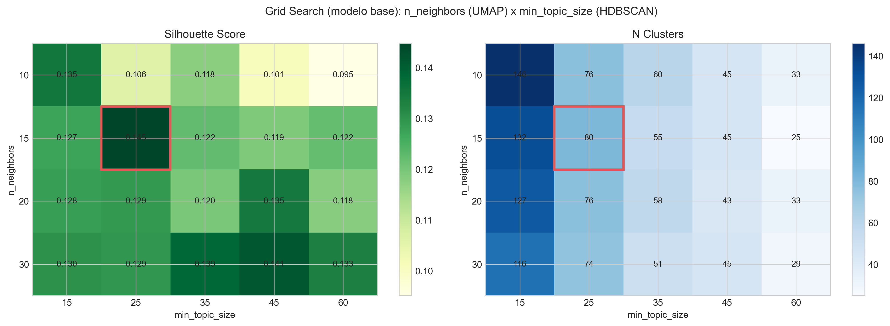
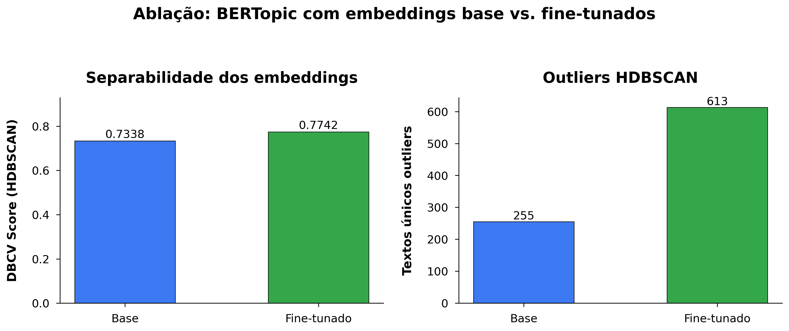
Os 79 clusters do BERTopic P2 foram revisados um a um. Cada cluster recebeu um rótulo da taxonomia com base nos textos mais representativos e nas palavras-chave c-TF-IDF do próprio cluster.
504 textos únicos sem cluster denso (label -1 no HDBSCAN) foram atribuídos ao grupo mais próximo por similaridade cosseno e confirmados por leitura humana.
Para cada grupo calcula-se o centroide ponderado pelo número de eventos no espaço do modelo fine-tunado. O score_mean é a similaridade cosseno média de todos os textos do grupo ao seu centroide. Quanto maior, mais coeso o grupo.
Grupos com score_mean > 0.85 têm alta coesão (Simulação, Protesto, Jogo brusco). Grupos com score menor são semanticamente mais amplos, como Ação temerária (0.58), que abrange entradas de diferentes intensidades.
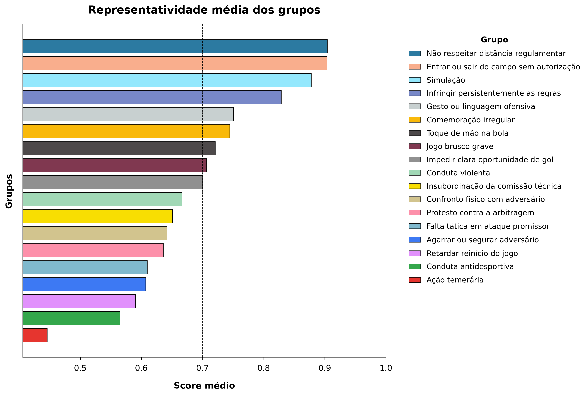
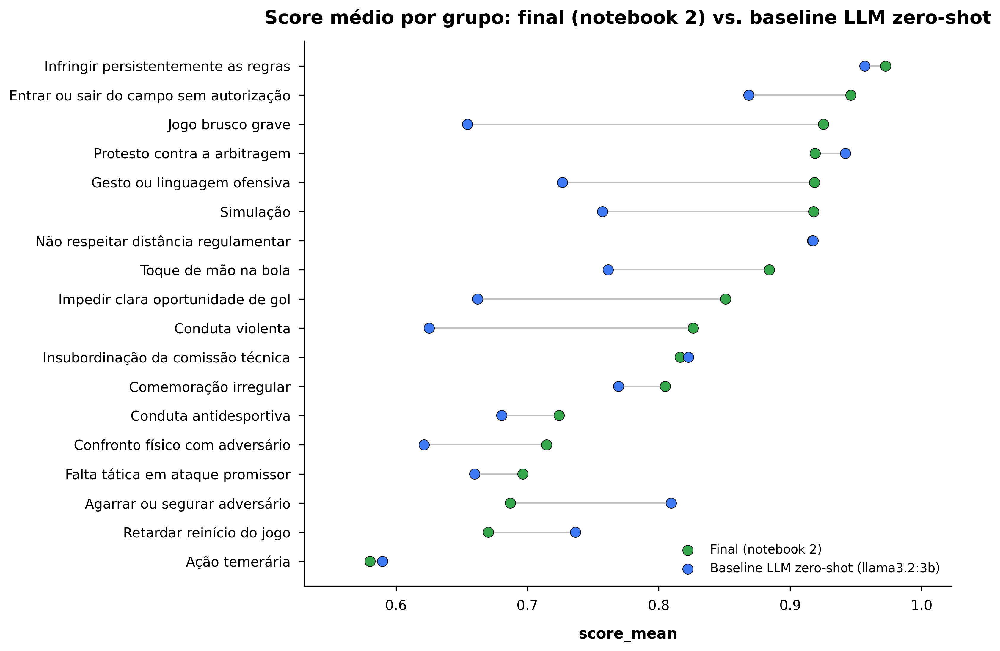
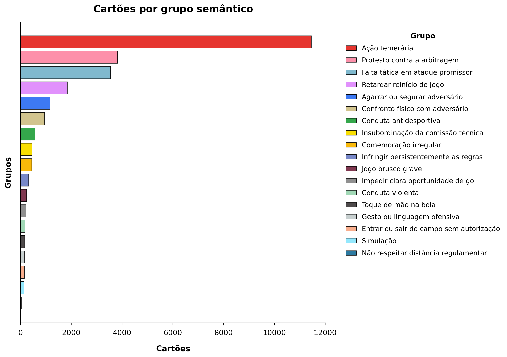
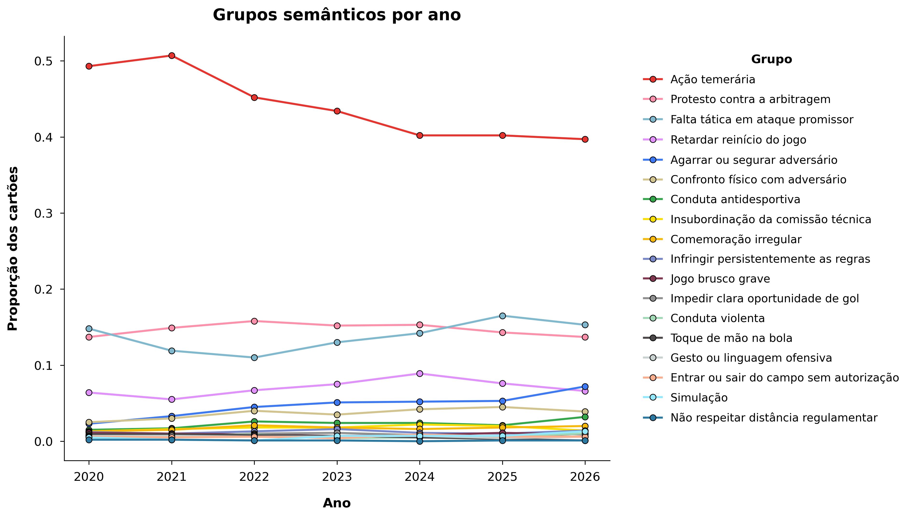
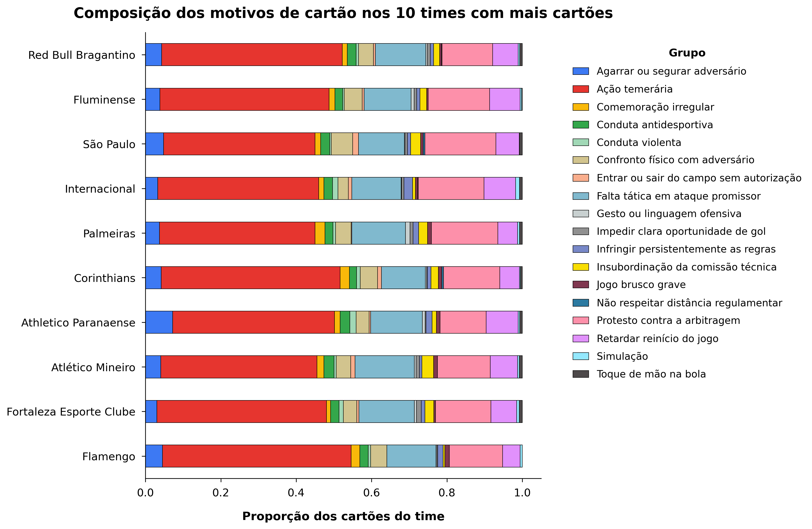
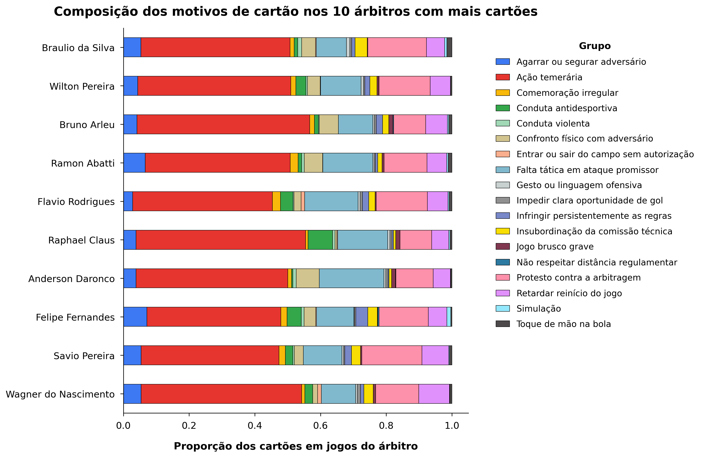
Nos motivos de acréscimos, termos como VAR e checagem indicam menção ao protocolo de vídeo.
Foram identificados sinais de VAR em 2.035 de 5.681 partidas, cerca de 35,8% da base.
O pico aparece em 2021. A queda de 2026 deve ser lida com cautela porque a temporada está incompleta.
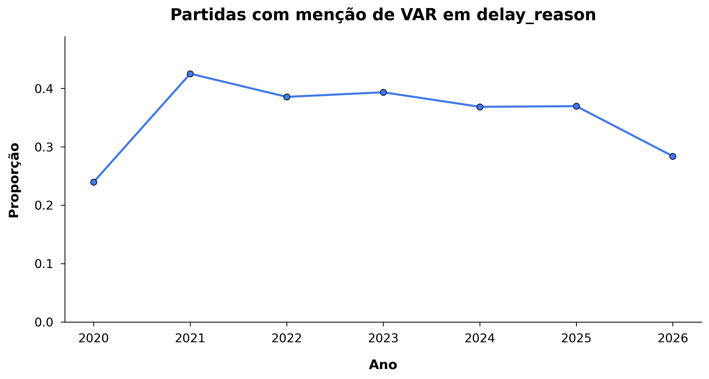
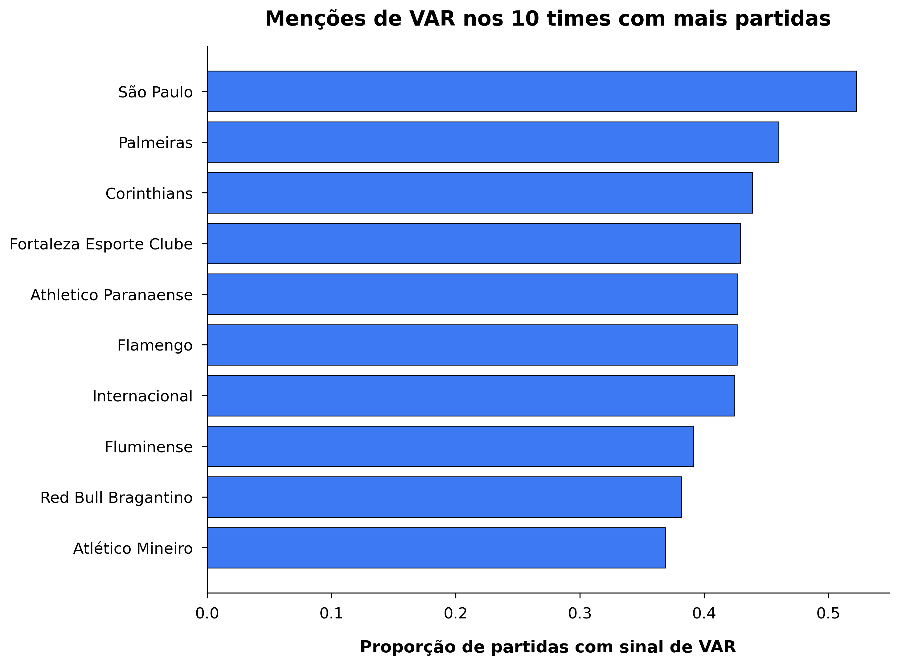
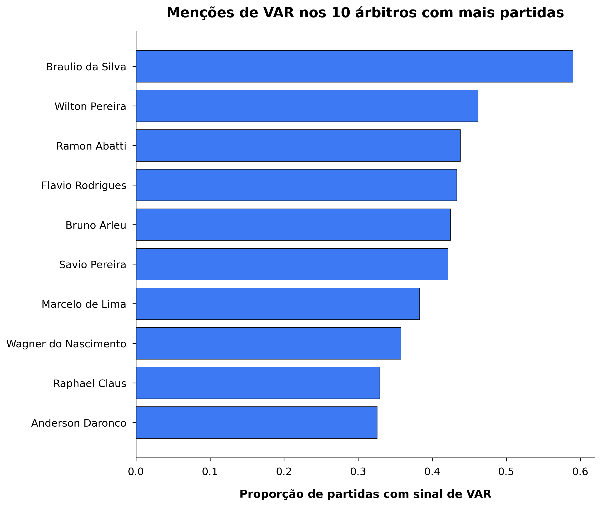
O pipeline BERTopic em duas passagens melhorou a separação dos clusters, reduziu outliers e gerou grupos interpretáveis.
Alguns grupos são semanticamente próximos ou amplos, especialmente conduta antidesportiva, confronto físico e ação temerária.
Treinar um classificador supervisionado com os rótulos finais e aprofundar análises longitudinais por árbitro, equipe e competição.